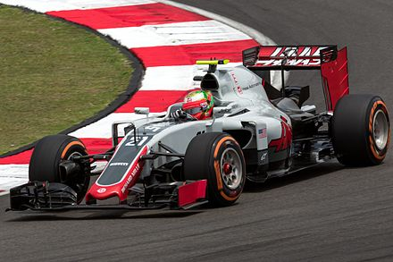
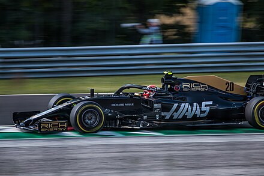

La Haas F1 Team è una scuderia statunitense di Formula 1 con sede a Banbury, nel Regno Unito, di proprietà della Haas Automation. Dal 2023 viene iscritta al campionato mondiale di Formula 1 con il nome di MoneyGram Haas F1 Team, per motivi di sponsorizzazione. La città britannica rappresenta una sede distaccata del team, in precedenza appartenuta alla Marussia, come appoggio per le gare europee del campionato. Fondata da Gene Haas, già cofondatore della scuderia del campionato NASCAR Stewart-Haas Racing, anch'essa con sede a Kannapolis, fa il suo debutto nel campionato mondiale di Formula 1 2016. Prima dell'esordio era nota anche con i nomi "Haas Formula" e "Haas Racing Developments".
Al debutto in F1, nel primo Gran Premio della stagione 2016, in Australia, conquista i primi punti della sua storia, con Romain Grosjean che arriva sesto, mentre Esteban Gutiérrez è costretto al ritiro dopo un incidente con il pilota spagnolo Fernando Alonso, della McLaren.[12] In Bahrein Grosjean si classifica quinto, e Gutiérrez si ritira ancora.  Il Gran Premio di Cina è stato concluso senza punti, mentre in Russia Grosjean arriva ottavo. Nei successivi gran premi la Scuderia non raccoglie punti. In Austria Grosjean è settimo, mentre Gutiérrez undicesimo. Nella corsa di casa, il Gran Premio degli Stati Uniti, Grosjean interrompe un digiuno lungo otto gare, portando un punto col decimo posto, mentre Gutiérrez si ritira. Nel Gran Premio del Brasile, Romain Grosjean si qualifica settimo, miglior risultato dell'anno, mentre in gara, durante il giro di schieramento, va a sbattere contro il muro a causa dell'aquaplaning ed è costretto al ritiro. Il compagno di squadra Esteban Gutiérrez si qualifica in dodicesima posizione, ma si ritirerà durante gli ultimi giri di gara. Nell'ultimo Gran Premio della stagione ad Abu Dhabi, le due vetture statunitensi di Grosjean e Gutiérrez finiscono rispettivamente undicesima e dodicesima. La prima stagione della scuderia Haas in Formula 1 la vede posizionarsi in ottava posizione nella classifica costruttori con 29 punti.
l primo Gran Premio stagionale vede Kevin Magnussen tagliare il traguardo in sesta posizione, mentre Romain Grosjean è costretto al ritiro a causa di una ruota fissata male. Nel prosieguo della stagione i risultati sono inferiori alle attese, tant'è che nella prima parte del campionato arrivano solo pochi altri piazzamenti a punti. Il 9 settembre il team americano comunica sul proprio sito e sui propri social la conclusione della sponsorizzazione da parte di Rich Energy con effetto immediato. Lo stesso pilota danese, come già successo nel 2018, coglie il giro più veloce in gara nel Gran Premio di Singapore, il secondo nella storia del team. La quarta stagione della Haas in Formula 1 la vede scivolare in nona posizione nel mondiale costruttori con appena 28 punti. A solo un anno dalla sua miglior stagione, la squadra americana è protagonista di un campionato molto al di sotto delle aspettative. Grosjean durante i test prestagionali 2020. La stagione inizia in salita per la scuderia, con un netto calo di prestazioni rispetto agli anni precedenti.  Il primo piazzamento a punti arriva alla terza gara stagionale, con un nono posto ottenuto da Magnussen, diventato poi decimo a causa di una penalità. Per rivedere una Haas in zona punti si deve attendere fino al Gran Premio dell'Eifel, nel quale Grosjean taglia il traguardo in nona posizione, conquistando i suoi primi punti in campionato. Il 22 ottobre entrambi i piloti annunciano il loro addio alla scuderia al termine della stagione. La scuderia conferma il pilota brasiliano anche per il successivo Gran Premio di Abu Dhabi, gara conclusiva della stagione. La quinta stagione della Haas in Formula 1 la vede confermarsi in nona posizione nel mondiale costruttori con soli 3 punti.
La scuderia viene ufficialmente rinominata in Uralkali Haas F1 Team. La stagione si rivela ancora più difficile della precedente, con i due piloti spesso relegati nelle ultime posizioni della classifica. A poche ore dall'inizio dell'ultima gara stagionale, il Gran Premio di Abu Dhabi, Mazepin risulta positivo al SARS-CoV-2. Poiché il pilota di riserva non prende parte a nessuna sessione di prove, i commissari lo ritengono non idoneo per sostituire il russo, così che la scuderia schiera il solo Schumacher in griglia. La sesta stagione della Haas in Formula 1 si rivela la peggiore in assoluto, con 0 punti totalizzati e il decimo e ultimo posto nel mondiale costruttori.
Qualche giorno dopo la scuderia termina la collaborazione con l'azienda. Successivamente, alla vigilia del secondo test pre-stagionale sul circuito del Bahrein, la scuderia interrompe unilateralmente anche il contratto del pilota titolare russo della scuderia, Nikita Mazepin, anche per via della cessazione del rapporto con Uralkali, che sosteneva la carriera del pilota. L'avvio di stagione, grazie anche ad un significativo cambio di regolamenti, mostra una netta crescita di prestazioni, con il raggiungimento di buoni risultati sia in qualifica che in gara sin dal primo appuntamento stagionale, nel quale Magnussen conquista la quinta posizione, miglior piazzamento per la scuderia dal 2018. La settima stagione della Haas in Formula 1 la vede risalire in ottava posizione nel mondiale costruttori con un totale di 37 punti.
Il 20 ottobre 2022 la scuderia annuncia il nuovo title sponsor MoneyGram, venendo rinominata da quest'anno MoneyGram Haas F1 Team. Il team americano rispetto allo scorso mondiale sembra meno competitivo, e solo raramente riesce a giungere tra i primi dieci. I pochi punti totalizzati nella prima metà del campionato portano soprattutto la firma di Hülkenberg, mentre Magnussen appare in difficoltà, nonostante un brillante quarto posto ottenuto in qualifica al Gran Premio di Miami. L'ottava stagione della Haas in Formula 1 si rivela molto deludente, vedendola scivolare di nuovo al decimo e ultimo posto nel mondiale costruttori con un totale di appena 12 punti. Al suo posto viene promosso il giapponese Ayao Komatsu, già presente nella scuderia statunitense dal 2016 in qualità di responsabile degli ingegneri di pista.